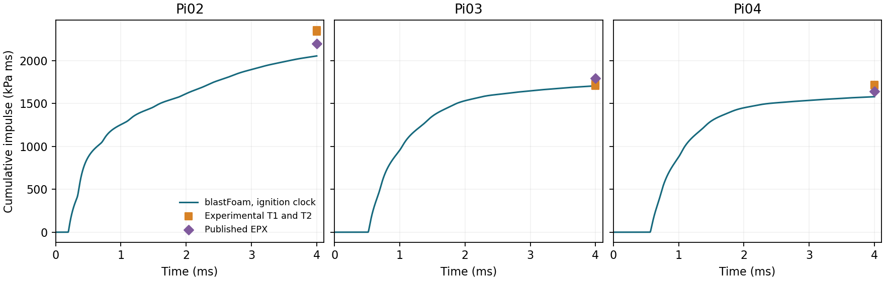

完整仿真作业 8943527。冲量 MAPE 实测重复试验 7.01%（6 项） · 论文 EPX 5.03%（3 项）。
逐点扣除 101.3 kPa 基线，保留超压正负号，在起爆时钟 0–4 ms 对原生样本作梯形积分。 论文把实验波前对齐到 EPX 的 Pi02。本次仿真采用瞬时 JWL 产物，时间基准沿用原生起爆时钟。 这组结果属于运行后补充诊断，独立于事先固定的峰值评价。
表 4 原页 · 图 15 原页 · 复算数据 · 峰值审核

| 测点 | 参考 | 参考 kPa·ms | 仿真 kPa·ms | APE |
|---|---|---|---|---|
| Pi02 | T1 | 2354 | 2053.70 | 12.76% |
| Pi02 | T2 | 2336 | 2053.70 | 12.08% |
| Pi02 | EPX | 2196 | 2053.70 | 6.48% |
| Pi03 | T1 | 1728 | 1705.37 | 1.31% |
| Pi03 | T2 | 1703 | 1705.37 | 0.14% |
| Pi03 | EPX | 1793 | 1705.37 | 4.89% |
| Pi04 | T1 | 1712 | 1579.01 | 7.77% |
| Pi04 | T2 | 1716 | 1579.01 | 7.98% |
| Pi04 | EPX | 1640 | 1579.01 | 3.72% |